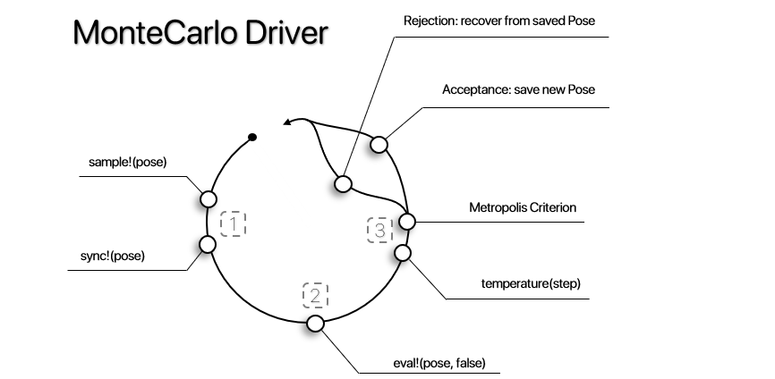

Monte Carlo Driver
The Monte Carlo Driver uses a sampling AbstractMutator to generate a conformational change, evaluating it accoridng to a given EnergyFunction or custom evaluating function, and deciding wether to keep the new Pose or return to the previous State according to the Metropolis Criterion.
ProtoSyn.Drivers.MonteCarlo — TypeMonteCarlo(eval!::Union{Function, EnergyFunction}, sample!::Union{Function, AbstractMutator, Driver}, callback::Opt{Callback}, max_steps::Int, temperature::Function)A MonteCarlo Driver instance. As such, this object is callable as a functor with the following signature:
(driver::MonteCarlo)(pose::Pose)This simulation performs a Markov Chain Monte Carlo algorithm (MCMC), more especifically, the Metropolis-Hastings method. Starting from an initial Pose pose conformation, new changes are imposed by calling the given sample! method (this is an AbstractMutator, Driver or a custom sampling function). Note that the Pose is synched (using the sync! method) after each sample! call. The two Pose instances are evaluated by calling the eval! method (an EnergyFunction or custom evaluator function). Following the Metropolis Criterion, the new Pose is accepted if the evaluated energy is lower than the previous Pose, or, otherwise, with a given probability based on the temperature of the simulation:
\[\;\;\;\;\;\; rand()<e^{-\frac{E_{n+1}-E_{n}}{T}} \;\;\;\;\;\;\;\;\;\;\;\;\;\;\;\;\;\;\;\;\;\;\;\;\;\;\;\;\;\;\;\;\;\;\;\;\;\;\;\;\;\;\;\;\;\;\;\;\;\;\;\;\;\;\;\;\;\;\;\;\;\;\;\;\;\;\;\;\;\;\;\;\;\;\;\;\;\;\;\;\;\;\;\;\;\;\;\;\]
Where $E_{n+1}$ is the energy of new Pose, $E_{n}$ is the current Pose energy and $T$ is current temperature of the simulation. As such, higher temperature values correlate with a higher chance to accept higher energy Pose instances (in order to overcome energy barriers). If rejected, the previous Pose is recovered for a new attempt. This simulation loop (sample! -> eval! -> metropolis criterion) continues for a total of max_steps. Each step, a call to an optional Callback callback is performed. A companion MonteCarloState DriverState instance is also updated each step and provided to the Callback callback.
Fields
eval!::Union{Function, EnergyFunction}- The evaluatorEnergyFunctionor custom function, receives aPoseposeas the single argument;sample!::Union{Function, AbstractMutator, Driver}- The sampler method, receives aPoseposeas the single input argument;callback::Opt{Callback}- An optionalCallbackinstance, receives two input arguments: the currentPoseposeand the currentDriverStatedriver_state;max_steps::Int- The total number of simulation steps to be performed;temperature::Function- The temperature function thermostat (see Available thermostats), receives the current step (as anInt) as the single input argument.
See also
Examples
julia> monte_carlo = ProtoSyn.Drivers.MonteCarlo(
energy_function,
dihedral_mutator,
ProtoSyn.Common.default_energy_step_callback(1),
10,
ProtoSyn.Drivers.get_linear_quench(1.0, 10))
⚒ Monte Carlo Driver:
├── ● Evaluator:
| └── 🗲 Energy Function (4 components):
| +----------------------------------------------------------------------+
| | Index | Component name | Weight (α) |
| +----------------------------------------------------------------------+
| | 1 | TorchANI_ML_Model | 1.000 |
| | 2 | Caterpillar_Solvation | 0.010 |
| | 3 | Bond_Distance_Restraint | 1.000 |
| | 4 | Cα-Cα_Clash_Restraint | 100.000 |
| +----------------------------------------------------------------------+
|
├── ● Sampler:
| └── ⚯ Dihedral Mutator:
| +----------------------------------------------------------------------+
| | Index | Field | Value |
| +----------------------------------------------------------------------+
| | 1 | angle_sampler | Function randn |
| | 2 | p_mut | 0.0100 |
| | 3 | step_size | 0.5000 |
| +----------------------------------------------------------------------+
| ● Selection: Set
| └── FieldSelection › Atom.name = r"C|N"
|
├── ● Callback:
| └── ✉ Callback:
| +----------------------------------------------------------------------+
| | Index | Field | Value |
| +----------------------------------------------------------------------+
| | 1 | Event | energy_step |
| | 2 | Frequency | 1 |
| +----------------------------------------------------------------------+
|
└── ● Settings:
Max steps: 10
Temperature: linear_quenchProtoSyn.Drivers.MonteCarloState — TypeMonteCarloState{T <: AbstractFloat}(step::Int = 0, converged::Bool = false, completed::Bool = false, stalled::Bool = false, acceptance_count = 0, temperature::T = T(0.0))
MonteCarloState{T <: AbstractFloat}()A MonteCarloState instance is a DriverState that keeps track of a MonteCarlo simulation status. Besides the default :step, :converged, :completed and :stalled fields, a MonteCarloState instance adds the following tracking fields specific for MonteCarlo simulations:
acceptance_count::Int- The number of acceptedPosechanges by the Metropolis criterion;temperature::T- The current temperature of the simulation.
See also
Examples
julia> ProtoSyn.Drivers.MonteCarloState{Float64}()
ProtoSyn.Drivers.MonteCarloState{Float64}(0, false, false, false, 0, 0.0)
Figure 1 | A schematic overview of the different stages in a MonteCarlo Driver: (1) - Sampling a new conformation; (2) - Evaluating the new Pose; (3) - Metropolis Criterion, the new Pose conformation is either accepted (in which case it is saved as a reference for further steps in the simulation) or rejected (where the current state is recovered from a saved Pose to the previous step).